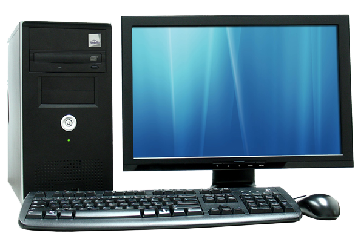

Welcome to our Website Guest
Computer hardware concept(Part 1)
Introduction:
A computer is a electronic device that processes data by following set of instruction. A computer system is a set of physical parts including computer itself ,that work together perform tasks. The physical parts that make up the entire computer system is called computer hardware. Such physical parts may be optical , electronic and mechanical. Hardware helps to enter raw data , process data , store data and finally display output on screen or printer.It is one of the important aspect of computer. A typical personal computer consist of following physical parts:input device , output device , microprocessor , computer memory , system board , expansion port , slots and cards and computer power supply.
Input unit:
The input unit is responsible for accepting input i.e. data and instruction from user. This work is accomplished with the help of input devices.Input device are the vital part of machine's functionally. Without these there would no way for a user to communicate with the computer. Modern machines can handle several different input device in use at one time. Most of the input device are attached to the computer either through a standard serial port connection or USB connection.
Computer keyboard:
A computer keyboard is a typewriter-style device which uses an arrangement of buttons or keys to act as a mechanical lever or electronic switch. It is one of the primary input devices. It allow you to input letters, numbers, and other symbols into a computer that can serve as commands or be used to type text.A keyboard contains many mechanical switches or push-buttons called "keys". There are 103 to 106 keys in keyboard. More modern devices carry extra buttons that provide the user with features like volume control , instant email acess and tools to control computer's media player.
Mouse:

A computer mouse is an input device that is most often used with a personal computer. It has 2 or 3 buttons on the top with either a rotating ball or optical sensor at bottom. It moves on a soft rubber base called mouse pad. Moving a mouse along a flat surface can move the on-screen cursor to different items on the screen. Items can be moved or selected by pressing the mouse buttons.Similarly we can also draw shapes or make a choice from menu with the help of mouse.
Joystick:
A joystick is an input device consisting of a stick that pivots on a base and reports its angle or direction to the device it is controlling. Joysticks are often used to playing video games and for CAD/CAM system.A joystick has a square or rectangular plastic base to which is attached a vertical stem. It has a spherical ball at lower end as well as upper end .The lower speherical ball moves in a socket. The joystick can moved omnidirectionally to control movement of an object in screen. The movement re sensed by potentiometer.
Trackball:

a trackball is a pointing input device. It consists of a ball held by a socket containing sensors to detect a rotation of the ball about two axes. It is like an upside-down mouse with a ball that sticks out. The user rolls the ball with the thumb, fingers or the palm of the hand to move a cursor. The trackball is held stationary while the ball is manually rotated by hand in any diection. The major advantage of trackball is that it takes little desktop surface.It is normally used in laptop personal computer.
Touchpad:

Touchpad is an input device found on the majority of portable computers that allows you to move mouse cursor without the need of an external mouse. It is operated by using your finger and dragging it across a flat surface , the mouse cursor will move in the same direction and it also has 2 buttons below the touch surface that enables you to click like a standard mouse.It must keep clean and static free because build up of dust and oil can affect a trackpad performance making it less sensitive to the touch.
Graphics tablet:

A graphics tablet is a hardware input device that enables an artist to draw or sketch digitally using a pen or stylus. They are helpful because they provide a more natural and precise feel than a standard computer mouse.When the pointing device is moved on the surface of the tablet , the location of device is translated to a specific o screen cursor position. It is used in engineering and design application as well as illustration work.
Scanner:

A scanner is an input device that scans documents such as photographs and pages of text. When a document is scanned, it is converted into a digital format.A scanner work by dihitizing an image --dividing it into a grid of boxes and representing each box with 0 or 1, depending on whwther the box is filled in. The resulting matrix of bits , called bit map can then be stored in a file,displayed in screen and manipulated by programs.
Webcam:

A webcam – short for ‘web camera’ – is a digital camera that’s connected to a computer. It can send live pictures from wherever it’s sited to another location by means of the internet. Many desktop computer screens and laptops come with a built-in camera and microphone, but if yours doesn’t, you can add a separate webcam at any time. There are various types. Some are plugged into computers through USB ports, but others are wireless (wifi).
Microphone:

Computer microphone gives the user the ability to transmit his voice through his computer. They are most commonly included as part of a headset apparatus that people can use to speak and listen to order computer users via the Internet
Light pen:

A light pen is a computer input device in the form of a light-sensitive wand used in conjunction with a computer's CRT display. It has a light sensor fixed at the end of a pen shaped tube and is capable of sensing a position an the screen when its tip touches the screen. It allows the user to point to displayed objects or write words or draw on the screen in a similar way to a touchscreen but with greater positional accuracy.
Barcode reader:

A barcode reader or scanner also known as point of scale(POS) scanner is a hardware device capable of reading a barcode and printing out the details of the product or logging that product into database. The scanner converts light energy into electrical energy which is then converted into data by the decoder and forwarded to a computer . A perfect example of barcode reader is a supermarket barcode scanner that reads and logs the price of product.
3D scanner:

A 3-D scanner is an imaging device that collects distance point measurements from a real-world object and translates them into a virtual 3-D object. 3-D scanners are used for creating life-like images and animation in movies and video games. Other applications of 3-D scanning include reverse engineering, prototyping, architectural and industrial modeling, medical imaging and medical device modeling. 3-D printers can use data from 3-D scans to create physical objects.Optical 3-D scanners use photographic, stereoscopic cameras, lasers or structured or modulated light. Optical scanning often requires many angles or sweeps. Commercial desktop and hand held 3-D scanners vendors include Digitizer, NextEngine, Go!SCAN and Fuel3-D. Most products use a combination of the techniques to make a faster and more accurate device that can capture color as well as form.
Output unit:
Output unit is a responsible for displaying output . It receives information from the computer and translates it from machine language to a form that human can understand. There are 2 board classes of output device. They are:
- Soft copy output
- Hard copy output
Soft copy output:
It refers to the output displayed on the screen. The output on the screen is lost when the computer is turned off . The most commonly used soft copy output device is a monitor.
Computer monitor

Monitor is most common form of output in a computer.It is a television like screen that display result of work done by computer. It provides a temporary display of meaning information . The output display in the screen often referred as soft copy. The basic types of monitors are:Cathode Ray Tube(CRT) monitors and Liquid Crystal Display (LCD) monitors. The CRT monitors look like television and are used with non-portable computer system. LCD monitors are flat and occupy less space.